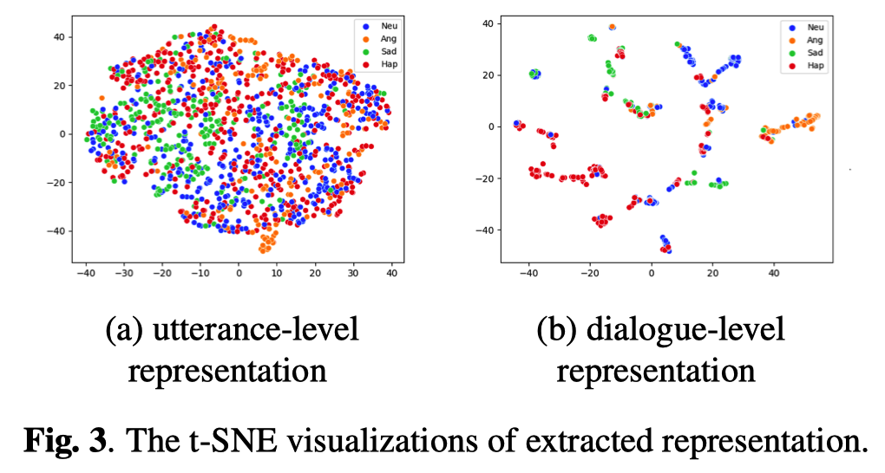

论文阅读——多模态情感分析（三）
ICASSP 2022 语音情感识别相关论文整理
[TOC]
ICASSP 2022语音情感分析论文列表
- Representation Learning Through Cross-modal Conditional Teacher-student Training For Speech Emotion Recognition, Amazon AWS AI
- Speech Emotion Recognition Using Self-supervised Features, IBM Research AI
- Multi-stage Graph Representation Learning For Dialogue-level Speech Emotion Recognition, 天津大学
- Frontend Attributes Disentanglement For Speech Emotion Recognition, 中国科学技术大学, iFLYTEK
- Neural Architecture Search For Speech Emotion Recognition, 香港中文大学
- Climate and Weather: Inspecting Depression Detection Via Emotion Recognition, 剑桥大学
- A Commonsense Knowledge Enhanced Network with Retrospective Loss for Emotion Recognition in Spoken Dialog, 哈工大
1. Representation Learning Through Cross-modal Conditional Teacher-student Training For Speech Emotion Recognition
作者单位: Amazon AWS AI; 论文链接
虽然文本和语音的大规模预训练模型可以减少对大规模数据集的需求，但是如何在emotion recognition任务中使用基于预训练模型的representation还尚在研究。本文的研究表明：1）top-performing representations在emotion recognition中的主要差异在于valence (V维)，而activation (A维)和dominance (D维)的差异不大；2）在valence预测中，即使最优的HUBERT representation也弱于text-speech representation。
本文通过condition teacher-Student training的方式来向speech representation融入lexical information。实验用到的数据集包括MSP-Podcast corpus和IEMOCAP，concordance correlation coefficient (CCC)指标在audio-only场景下达到了SOTA的效果。
2. Speech Emotion Recognition Using Self-supervised Features
作者单位: IBM Research AI; 论文链接
本文介绍了一个模块化的端到端(E2E) SER系统。该系统基于一种上下游架构范式，可以轻松使用/集成各种自监督预训练模块。实际上，本文模型就是五折交叉验证 + 预训练微调 + 特征聚合（Mean Average Pooling 和ECAPA-TDNN） + 模型聚合，感觉有点儿像比赛的trick。
数据集采用的是IEMOCAP。

3. Multi-stage Graph Representation Learning For Dialogue-level Speech Emotion Recognition
作者单位: 天津大学; 论文链接
随着语音情感识别技术的发展，目前的研究大多停留在话语层面，无法适应实际场景的需要。本文提出了一种着重于捕获对话级上下文信息的emotion recognition策略。该策略包含两个模块：1）对话多阶段图表示学习算法(DialogMSG)引入了从不同对话范围进行建模的多阶段图，以获取更有效的信息；2）包含utterance-level classifier和 dialogue-level classifier的双约束模块。
实验用到的数据集是IEMOCAP，dialogue atmosphere标签是该轮dialog的所有utterance中出现频率最高的emotion。 这样做的原因是作者认为对话的氛围与说话人情绪有很强的关系，但取标签的方式显得过于粗糙。尤其IEMOCAP是个表演型数据集（说话人针对特定的情绪进行表演，与真实场景有很大的差距），dialogue atmosphere标签准确率可能会很低。

4. Frontend Attributes Disentanglement For Speech Emotion Recognition
作者单位: 中国科学技术大学, iFLYTEK Research; 论文链接
基于有限数据集的语音情感识别是一项具有挑战性的任务，因为语音信息除了包含情感外，还包含说话人、语义和语种等各种干扰属性。然而，由于说话人与情感属性之间的密切关系，只需对线性模型进行微调，就足以在预先训练的说话人识别(SR)前端提取的话语级嵌入(即向量和x向量)上获得良好的SER性能（作者的核心观点，后续模型设计和实现均以此为基础）。 换言之，文章的motivation为：通过利用相关领域的大规模数据（说话人识别数据），克服现有标签SER数据不足的问题。
本文的主要工作包括：
- 用双空间损失（dual space loss）来分解情感相关 ($R^{+}$) 和情感无关 ($R^{-}$) 空间；（这两个空间的获取方法值得注意，尤其是instance正则化之后的差操作，需要更深入的理解）
- 通过时频注意力机制来引入远程的上下文信息（long-range contextual information）;
- 与先前基于风格分解（style disentangle）的方法不同，本文提出的方法可以直接应用到前端特征提取器上（主要指其它任务的大规模预训练模型）。
实验采用的数据集是IEMOCAP。
5. Neural Architecture Search For Speech Emotion Recognition
作者单位: 香港中文大学; 论文链接
本文提出了一种基于Neural Architecture Search (NAS) 的网络结构搜索算法，称为：统一路径丢弃策略 (uniform path dropout strategy)，主要就是将NAS原有的uniform path sampling替换为dropout。
所用数据集为IEMOCAP。
6. Climate and Weather: Inspecting Depression Detection Via Emotion Recognition
作者单位: 剑桥大学; 论文链接
情绪和抑郁之间存在着紧密的关系，因此作者将用于情绪识别的模型迁移到抑郁-健康状态的二分类检测中。作者实验后发现，情绪和抑郁的关系类似于天气和气候，也就有了题目中的Climate和Weather。
所用情绪识别数据集为：IEMOCAP/MOSEI；抑郁检测数据集为：DAIC-WOZ。
7. A Commonsense Knowledge Enhanced Network with Retrospective Loss for Emotion Recognition in Spoken Dialog
作者单位: 哈工大; 论文链接
本文研究动机包括：1) 现有对话情感识别数据集 (Emotion Recognition in Spoken Dialog, ERSD) 规模都很小，限制了模型能力；2) 对话中表达的情感与先前的经验有关，这种经验可以是常识 (commonsense knowledge, Case #1 in Fig.1)，也可以是模型历史的判断 (model historical judgement, Case #2 in Fig.1)。
本文提出了CKE-Net来 1）层次化地进行对话建模——不同层特征的concate；2）集成外部知识 (external knowledge integration)；3）回溯历史状态 (historical state retrospect)。其中， Knowledge Enhancement Module用的外部知识库是ConceptNet，知识表示方式为四元组<concept1, relation, concept2, confidence>，本文没有使用relation属性。
所用数据集为IEMOCAP和MELD